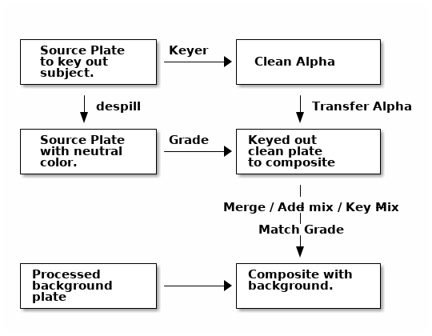
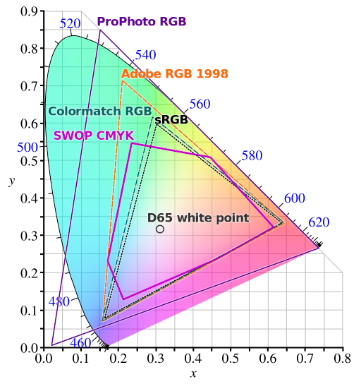
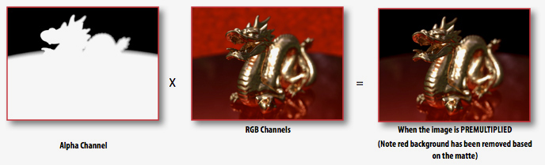
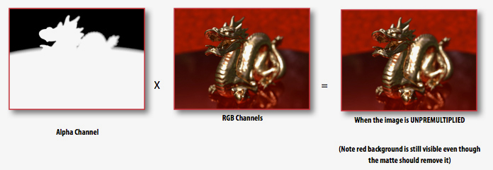

Compositing Chroma\footnote{My footnote.}
Chroma keying in Nuke
avik.c@whistlingwoods.net
Keying is a compositing technique, but it’s not the only one.
A huge error that many filmmakers make is thinking that it is cheaper and easier to fix all production problems in post.
- Bad Chroma takes time to fix which costs money
- Quality of output drops
Example
Keying
Overview

Source Plate
- Color Space
- Denoise
- Screen Fixes to even out the background
Color Space

Denoise
Degrain tools are used when an image is compromised by film grain.
Screen Fixes

Keyer
- Luminance Keyer
- Hue Keyer
- Chroma Keyer
- Blue Screen
- Green Screen
- Magenta Screen
Alpha
- Roto
- Core Matte
- Garbage Matte
- Black and White Matte
Spill Supress
- Types
- Core Spill
- Edge Spill
- Despill Tools
- Primatte
- Hue Correct
- Gizmos
- De-spill Madness
Color Correcting
Transfer Alpha
Premult
- A premultiplied image is simply an image where the alpha (a) channel has been multiplied by the colour (RGB)

Unpremult
- Unpremult divides the input’s rgb channels by its alpha

Copy Node
Shuffle
Shuffle Copy
Final Plate Export
Add-Mix
Merge
Merge Expressions
Key-Mix
Primatte
Keylight
Ultimatte
Mattes
Splitting Mattes
Despill
Recolor
Clips
https://www.youtube.com/watch?v=RtILuFhe6v4 https://youtu.be/TxyMY-hmJfs